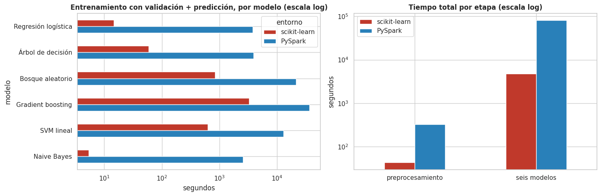
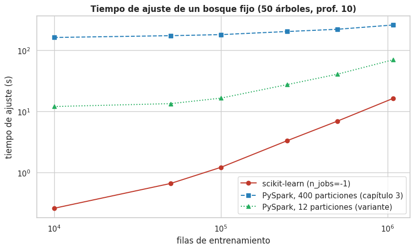

6 · Comparación de resultados: métricas, tiempos y volumen#
Cada par de modelos (scikit-learn y PySpark) comparte la misma familia de modelos (los optimizadores y la forma de elegir los cortes difieren entre motores), espacios de búsqueda equivalentes, 3 pliegues idénticos, las mismas variables y la misma partición entrenamiento/prueba. Todos se entrenaron en la misma máquina, uno a la vez y sin otros procesos pesados durante las mediciones de tiempo. La comparación estadística (¿son reales las diferencias?) está en el capítulo 5; aquí se resumen métricas y tiempos.
Máquina: Intel Core i5-13420H (8 núcleos, 12 hilos lógicos), 16 GB de RAM, Windows 11. Spark en modo local
(local[*]) con la configuración del capítulo 3.
Mostrar el código
import json
import platform
import sys
import warnings
from pathlib import Path
import matplotlib.pyplot as plt
import numpy as np
import pandas as pd
import seaborn as sns
from IPython.display import display
from sklearn.metrics import PrecisionRecallDisplay, average_precision_score, roc_auc_score, roc_curve
sys.path.insert(0, str(Path.cwd().parent))
from src import lc_models as lm # noqa: E402
from src import lc_utils as lc # noqa: E402
warnings.filterwarnings("ignore")
pd.set_option("display.width", 220)
pd.set_option("display.max_columns", 40)
pd.set_option("display.float_format", lambda v: f"{v:,.4f}")
sns.set_theme(style="whitegrid", context="notebook")
plt.rcParams.update({"figure.dpi": 100, "axes.titleweight": "bold"})
RESULTS = Path("../resultados")
sk = json.loads((RESULTS / "sk_resultados.json").read_text())
sp = json.loads((RESULTS / "sp_resultados.json").read_text())
R_SK, R_SP = sk["modelos"], {k: json.loads((RESULTS / f"sp_modelo_{k}.json").read_text()) for k in lm.CLAVES}
ENT = {"sk": "scikit-learn", "sp": "PySpark"}
print(f"Equipo de los experimentos: Spark {sp['spark_version']} · {sk['hilos']} hilos lógicos · RAM {sk['ram_gb']:.1f} GB · heap JVM {sp['heap_jvm_gb']:.1f} GB")
Equipo de los experimentos: Spark 3.5.9 · 12 hilos lógicos · RAM 16.9 GB · heap JVM 8.6 GB
6.1 Métricas de los seis modelos en los dos entornos#
Todas sobre el mismo conjunto de prueba. Las métricas con umbral (exactitud, precisión, sensibilidad y F1) usan el umbral elegido con el entrenamiento de cada modelo (F1 sobre puntuaciones fuera de pliegue).
Mostrar el código
a, b = pd.read_parquet(RESULTS / "sk_scores_test.parquet"), None
S, y = {}, a["y"].to_numpy()
for k in lm.CLAVES:
S[("sk", k)] = a[k].to_numpy()
p = pd.read_parquet(RESULTS / f"sp_scores_test_{k}.parquet")
S[("sp", k)] = a[["id"]].merge(p, on="id", how="left")["score"].to_numpy()
UMB = {("sk", k): R_SK[k]["umbral_f1"] for k in lm.CLAVES} | {("sp", k): R_SP[k]["umbral_f1"] for k in lm.CLAVES}
filas = []
for (e, k), s in S.items():
mt = lc.threshold_metrics(y, s, UMB[(e, k)])
filas.append({"modelo": lm.NOMBRES[k], "entorno": ENT[e], "ROC AUC": roc_auc_score(y, s), "AUC-PR": average_precision_score(y, s),
"accuracy": mt["accuracy"], "precision": mt["precision"], "recall": mt["recall"], "f1": mt["f1"], "umbral": mt["umbral"]})
tab = pd.DataFrame(filas)
orden = [lm.NOMBRES[k] for k in lm.CLAVES]
piv = tab.pivot(index="modelo", columns="entorno", values=["ROC AUC", "AUC-PR", "accuracy", "precision", "recall", "f1"]).loc[orden]
display(piv.swaplevel(axis=1).sort_index(axis=1, level=0, sort_remaining=False))
tab.to_csv(RESULTS / "comparacion_metricas.csv", index=False)
dif = (piv["ROC AUC"]["scikit-learn"] - piv["ROC AUC"]["PySpark"]).rename("ΔAUC (scikit-learn − PySpark)")
display(dif.to_frame())
| entorno | PySpark | scikit-learn | ||||||||||
|---|---|---|---|---|---|---|---|---|---|---|---|---|
| ROC AUC | AUC-PR | accuracy | precision | recall | f1 | ROC AUC | AUC-PR | accuracy | precision | recall | f1 | |
| modelo | ||||||||||||
| Regresión logística | 0.7095 | 0.3700 | 0.6699 | 0.3274 | 0.6200 | 0.4285 | 0.7095 | 0.3700 | 0.6665 | 0.3256 | 0.6259 | 0.4283 |
| Árbol de decisión | 0.7004 | 0.3564 | 0.6497 | 0.3140 | 0.6367 | 0.4205 | 0.7022 | 0.3594 | 0.6510 | 0.3142 | 0.6329 | 0.4199 |
| Bosque aleatorio | 0.7152 | 0.3815 | 0.6759 | 0.3324 | 0.6187 | 0.4325 | 0.7164 | 0.3821 | 0.6785 | 0.3345 | 0.6168 | 0.4337 |
| Gradient boosting | 0.7189 | 0.3863 | 0.6798 | 0.3361 | 0.6194 | 0.4358 | 0.7196 | 0.3875 | 0.6904 | 0.3428 | 0.6009 | 0.4366 |
| SVM lineal | 0.5985 | 0.2854 | 0.7032 | 0.3077 | 0.3891 | 0.3436 | 0.4956 | 0.2036 | 0.2020 | 0.1993 | 0.9936 | 0.3320 |
| Naive Bayes | 0.6883 | 0.3479 | 0.6505 | 0.3115 | 0.6200 | 0.4146 | 0.6884 | 0.3480 | 0.6473 | 0.3100 | 0.6259 | 0.4147 |
| ΔAUC (scikit-learn − PySpark) | |
|---|---|
| modelo | |
| Regresión logística | 0.0000 |
| Árbol de decisión | 0.0018 |
| Bosque aleatorio | 0.0012 |
| Gradient boosting | 0.0007 |
| SVM lineal | -0.1029 |
| Naive Bayes | 0.0001 |
¿Son reales estas diferencias? La prueba se hace en el capítulo 5 (DeLong pareado, McNemar y bootstrap, con corrección de Holm); aquí se reproducen esas tres columnas junto al ΔAUC de cada modelo.
Mostrar el código
est = pd.read_csv(RESULTS / "estadistica_resumen_tres_pruebas.csv")
est_a = est[est["familia"] == "A"].copy()
est_a["modelo"] = est_a["comparación"].str.split(":").str[0]
est_a = est_a.set_index("modelo").loc[orden]
resumen_dif = pd.DataFrame({
"ΔAUC (scikit-learn − PySpark)": dif,
"ΔAUC bootstrap [IC95]": est_a["boot ΔAUC [IC95]"],
"p DeLong (Holm)": est_a["DeLong p Holm"],
"p McNemar (Holm)": est_a["McNemar p Holm"],
"relevante (|ΔAUC| ≥ 0.005)": est_a["relevante"],
})
display(resumen_dif.style.format({"ΔAUC (scikit-learn − PySpark)": "{:+.4f}", "p DeLong (Holm)": "{:.2e}", "p McNemar (Holm)": "{:.2e}"}))
| ΔAUC (scikit-learn − PySpark) | ΔAUC bootstrap [IC95] | p DeLong (Holm) | p McNemar (Holm) | relevante (|ΔAUC| ≥ 0.005) | |
|---|---|---|---|---|---|
| modelo | |||||
| Regresión logística | +0.0000 | +0.0000 [-0.0000, +0.0000] | 4.84e-01 | 2.85e-119 | False |
| Árbol de decisión | +0.0018 | +0.0018 [+0.0007, +0.0029] | 3.07e-03 | 5.75e-02 | False |
| Bosque aleatorio | +0.0012 | +0.0012 [+0.0008, +0.0016] | 4.05e-08 | 1.77e-10 | False |
| Gradient boosting | +0.0007 | +0.0007 [+0.0002, +0.0011] | 3.83e-03 | 2.65e-130 | False |
| SVM lineal | -0.1029 | -0.1029 [-0.1064, -0.0995] | 0.00e+00 | 0.00e+00 | True |
| Naive Bayes | +0.0001 | +0.0001 [+0.0001, +0.0001] | 1.27e-34 | 2.68e-111 | False |
6.2 Curvas ROC y precisión–recall (un gráfico por entorno, con los seis modelos)#
Mostrar el código
fig, ax = plt.subplots(2, 2, figsize=(14, 11))
for j, e in enumerate(("sk", "sp")):
for k in lm.CLAVES:
fpr, tpr, _ = roc_curve(y, S[(e, k)])
ax[0, j].plot(fpr, tpr, label=f"{lm.NOMBRES[k]} (AUC = {roc_auc_score(y, S[(e, k)]):.4f})")
PrecisionRecallDisplay.from_predictions(y, S[(e, k)], name=lm.NOMBRES[k], ax=ax[1, j])
ax[0, j].plot([0, 1], [0, 1], "k:")
ax[0, j].set(xlabel="tasa de falsos positivos", ylabel="tasa de verdaderos positivos")
ax[0, j].legend(loc="lower right")
ax[0, j].set_title(f"Curvas ROC · {ENT[e]}")
ax[1, j].set(xlabel="sensibilidad (recall)", ylabel="precisión")
ax[1, j].axhline(y.mean(), color="k", ls=":")
ax[1, j].set_title(f"Curvas precisión–recall · {ENT[e]} (línea punteada: azar = {y.mean():.2f})")
plt.tight_layout()
plt.show()

6.3 Tiempos de cómputo por modelo y por entorno#
Se comparan las etapas equivalentes. La «carga» y el «preprocesamiento» se comparan juntos: Spark lee de
forma perezosa y descarta las columnas que no usa, así que su tiempo de «carga» aislado no es comparable con el
de pandas (que convierte las columnas a memoria). Para scikit-learn la fila suma leer las 24 columnas
necesarias, construir variables, codificar y escalar; para Spark incluye leer, construir variables, unir con la
partición, ajustar los transformadores (incluido el escalador) y cachear. El arranque de la sesión de Spark
y la transferencia de id, default y puntuación al driver se muestran aparte.
Mostrar el código
t_prep_sk = sk["tiempos_comunes_s"]["carga_csv"] + sk["tiempos_comunes_s"]["features"] + sk["tiempos_comunes_s"]["preprocesamiento"]
t_prep_sp = sp["tiempos_s"]["preprocesamiento"]
filas = []
for k in lm.CLAVES:
for e, r in (("sk", R_SK[k]), ("sp", R_SP[k])):
filas.append({"modelo": lm.NOMBRES[k], "entorno": ENT[e], "entrenamiento con validación (s)": r["t_entrenamiento_con_cv_s"],
"predicción test (s)": r["t_prediccion_s"], "umbral OOF (s)": r["t_oof_umbral_s"],
"transferencia al driver (s)": r.get("t_transferencia_s", np.nan)})
tiempos = pd.DataFrame(filas)
tiempos["entrenamiento + predicción (s)"] = tiempos["entrenamiento con validación (s)"] + tiempos["predicción test (s)"]
tt = tiempos.pivot(index="modelo", columns="entorno", values="entrenamiento + predicción (s)").loc[orden]
tt["PySpark / scikit-learn"] = tt["PySpark"] / tt["scikit-learn"]
tt.loc["TOTAL seis modelos"] = [tt["scikit-learn"].sum(), tt["PySpark"].sum(), tt["PySpark"].sum() / tt["scikit-learn"].sum()]
display(tt.style.format({"scikit-learn": "{:,.1f}", "PySpark": "{:,.1f}", "PySpark / scikit-learn": "{:.1f}×"}))
det = tiempos.set_index(["modelo", "entorno"])
display(det.style.format("{:,.1f}"))
print(f"Preprocesamiento (carga + variables + codificación + escalado): scikit-learn {t_prep_sk:.0f} s · PySpark {t_prep_sp:.0f} s "
f"(arranque de la sesión de Spark aparte: {sp['tiempos_s'].get('arranque_sesion', float('nan')):.0f} s)")
tiempos.to_csv(RESULTS / "comparacion_tiempos.csv", index=False)
fig, ax = plt.subplots(1, 2, figsize=(15, 5))
piv_t = tiempos.pivot(index="modelo", columns="entorno", values="entrenamiento + predicción (s)").loc[orden]
piv_t[["scikit-learn", "PySpark"]].plot.barh(ax=ax[0], color=["#c0392b", "#2980b9"], logx=True) # mismo color por entorno en ambos paneles
ax[0].set(title="Entrenamiento con validación + predicción, por modelo (escala log)", xlabel="segundos")
ax[0].invert_yaxis()
tot = pd.DataFrame({"scikit-learn": [t_prep_sk, piv_t["scikit-learn"].sum()], "PySpark": [t_prep_sp, piv_t["PySpark"].sum()]},
index=["preprocesamiento", "seis modelos"])
tot.plot.bar(ax=ax[1], color=["#c0392b", "#2980b9"], logy=True, rot=0)
ax[1].set(title="Tiempo total por etapa (escala log)", ylabel="segundos")
plt.tight_layout()
plt.show()
TOT_SK, TOT_SP = t_prep_sk + piv_t["scikit-learn"].sum(), t_prep_sp + piv_t["PySpark"].sum()
print(f"TOTAL (preprocesamiento + seis modelos): scikit-learn {TOT_SK / 60:,.1f} min · PySpark {TOT_SP / 60:,.1f} min · razón {TOT_SP / TOT_SK:.1f}×")
| entorno | PySpark | scikit-learn | PySpark / scikit-learn |
|---|---|---|---|
| modelo | |||
| Regresión logística | 3,800.2 | 14.8 | 257.0× |
| Árbol de decisión | 3,867.4 | 59.4 | 65.1× |
| Bosque aleatorio | 21,184.1 | 843.2 | 25.1× |
| Gradient boosting | 36,421.5 | 3,268.0 | 11.1× |
| SVM lineal | 12,956.0 | 623.9 | 20.8× |
| Naive Bayes | 2,562.3 | 5.4 | 477.9× |
| TOTAL seis modelos | 4,814.6 | 80,791.5 | 16.8× |
| entrenamiento con validación (s) | predicción test (s) | umbral OOF (s) | transferencia al driver (s) | entrenamiento + predicción (s) | ||
|---|---|---|---|---|---|---|
| modelo | entorno | |||||
| Regresión logística | scikit-learn | 14.7 | 0.1 | 6.2 | nan | 14.8 |
| PySpark | 3,799.3 | 0.8 | 364.9 | 0.5 | 3,800.2 | |
| Árbol de decisión | scikit-learn | 59.3 | 0.1 | 18.7 | nan | 59.4 |
| PySpark | 3,866.8 | 0.6 | 334.5 | 0.3 | 3,867.4 | |
| Bosque aleatorio | scikit-learn | 837.4 | 5.7 | 228.2 | nan | 843.2 |
| PySpark | 21,144.7 | 39.3 | 6,730.0 | 7.9 | 21,184.1 | |
| Gradient boosting | scikit-learn | 3,266.7 | 1.3 | 770.0 | nan | 3,268.0 |
| PySpark | 36,419.1 | 2.4 | 12,059.1 | 0.5 | 36,421.5 | |
| SVM lineal | scikit-learn | 623.7 | 0.2 | 57.9 | nan | 623.9 |
| PySpark | 12,955.4 | 0.6 | 3,477.9 | 0.3 | 12,956.0 | |
| Naive Bayes | scikit-learn | 4.8 | 0.5 | 2.1 | nan | 5.4 |
| PySpark | 2,561.7 | 0.6 | 19.5 | 0.3 | 2,562.3 |
Preprocesamiento (carga + variables + codificación + escalado): scikit-learn 43 s · PySpark 323 s (arranque de la sesión de Spark aparte: 24 s)


TOTAL (preprocesamiento + seis modelos): scikit-learn 81.0 min · PySpark 1,351.9 min · razón 16.7×
6.4 ¿Desde qué volumen de datos cambia el ganador en velocidad?#
Se ajustó un bosque fijo (50 árboles, profundidad 10) con subconjuntos crecientes del entrenamiento en scikit-learn y en PySpark (con las 400 particiones de la sesión y con una variante de 12 particiones, capítulos 3b y 3c). Es un benchmark de tiempos, no el modelo final.
Mostrar el código
es, ep = pd.read_csv(RESULTS / "escala_sklearn.csv"), pd.read_csv(RESULTS / "escala_spark.csv")
e12 = pd.read_csv(RESULTS / "escala_spark_12part.csv")
esc = (es.rename(columns={"t_ajuste_s": "sk", "auc_test": "auc_sk"})[["filas_train", "sk", "auc_sk"]]
.merge(ep.rename(columns={"t_ajuste_s": "sp400", "auc_test": "auc_sp400"})[["filas_train", "sp400", "auc_sp400"]], on="filas_train")
.merge(e12.rename(columns={"t_ajuste_s": "sp12"})[["filas_train", "sp12"]], on="filas_train"))
esc["Spark(400) / sklearn"], esc["Spark(12) / sklearn"] = esc["sp400"] / esc["sk"], esc["sp12"] / esc["sk"]
display(esc.style.format({"filas_train": "{:,.0f}", "sk": "{:.1f}", "sp400": "{:.1f}", "sp12": "{:.1f}", "auc_sk": "{:.4f}", "auc_sp400": "{:.4f}",
"Spark(400) / sklearn": "{:.1f}×", "Spark(12) / sklearn": "{:.1f}×"}))
fig, ax = plt.subplots(figsize=(8.5, 5.2))
ax.plot(esc["filas_train"], esc["sk"], "o-", color="#c0392b", label="scikit-learn (n_jobs=-1)")
ax.plot(esc["filas_train"], esc["sp400"], "s--", color="#2980b9", label="PySpark, 400 particiones (capítulo 3)")
ax.plot(esc["filas_train"], esc["sp12"], "^:", color="#27ae60", label="PySpark, 12 particiones (variante)")
ax.set(xscale="log", yscale="log", xlabel="filas de entrenamiento", ylabel="tiempo de ajuste (s)",
title="Tiempo de ajuste de un bosque fijo (50 árboles, prof. 10)")
ax.legend()
plt.tight_layout()
plt.show()
rows = []
for nombre, col in (("scikit-learn", "sk"), ("PySpark (400 particiones)", "sp400"), ("PySpark (12 particiones)", "sp12")):
b_, a_ = np.polyfit(esc["filas_train"].to_numpy(float), esc[col].to_numpy(), 1)
rows.append({"versión": nombre, "costo fijo (s)": a_, "costo por millón de filas (s)": b_ * 1e6, "con el entrenamiento completo (s)": float(esc[col].iloc[-1])})
afin = pd.DataFrame(rows).set_index("versión")
display(afin)
b_sk = afin.loc["scikit-learn", "costo por millón de filas (s)"]
if ((esc["sp400"] < esc["sk"]) | (esc["sp12"] < esc["sk"])).any():
print("Spark fue más rápido en algún volumen medido.")
else:
print("En ningún volumen probado (hasta el entrenamiento completo) Spark fue más rápido que scikit-learn, con ninguna de las dos configuraciones.")
for v in ("PySpark (400 particiones)", "PySpark (12 particiones)"):
b_sp = afin.loc[v, "costo por millón de filas (s)"]
print(f"{v}: costo por fila {b_sp:.0f} s por millón " + (f"< scikit-learn {b_sk:.0f}: podrían cruzarse (extrapolación)." if b_sp < b_sk
else f"> scikit-learn {b_sk:.0f}: las rectas no se cruzan en el equipo utilizado."))
| filas_train | sk | auc_sk | sp400 | auc_sp400 | sp12 | Spark(400) / sklearn | Spark(12) / sklearn | |
|---|---|---|---|---|---|---|---|---|
| 0 | 10,000 | 0.3 | 0.7012 | 161.0 | 0.7003 | 11.9 | 625.0× | 46.3× |
| 1 | 50,000 | 0.7 | 0.7086 | 172.2 | 0.7076 | 13.3 | 262.0× | 20.2× |
| 2 | 100,000 | 1.2 | 0.7101 | 179.2 | 0.7092 | 16.4 | 148.6× | 13.6× |
| 3 | 250,000 | 3.3 | 0.7113 | 201.5 | 0.7094 | 27.3 | 61.1× | 8.3× |
| 4 | 500,000 | 6.9 | 0.7114 | 219.2 | 0.7089 | 40.4 | 31.8× | 5.9× |
| 5 | 1,076,248 | 16.2 | 0.7114 | 257.6 | 0.7084 | 69.4 | 15.9× | 4.3× |


| costo fijo (s) | costo por millón de filas (s) | con el entrenamiento completo (s) | |
|---|---|---|---|
| versión | |||
| scikit-learn | -0.2269 | 15.0345 | 16.1910 |
| PySpark (400 particiones) | 169.8932 | 86.2194 | 257.5911 |
| PySpark (12 particiones) | 11.7380 | 54.4836 | 69.4192 |
En ningún volumen probado (hasta el entrenamiento completo) Spark fue más rápido que scikit-learn, con ninguna de las dos configuraciones.
PySpark (400 particiones): costo por fila 86 s por millón > scikit-learn 15: las rectas no se cruzan en el equipo utilizado.
PySpark (12 particiones): costo por fila 54 s por millón > scikit-learn 15: las rectas no se cruzan en el equipo utilizado.
6.5 Efecto de cada elemento de la configuración de Spark#
Micro-benchmarks del capítulo 3b (bosque pequeño fijo). «Factor» = cuántas veces tarda más (> 1) o menos (< 1) la alternativa frente a la opción usada en los capítulos 3 y 3b.
Mostrar el código
abl = pd.read_csv(RESULTS / "spark_ablacion.csv")
display(abl.style.format({"con la condición (s)": "{:.1f}", "sin / alternativa (s)": "{:.1f}", "factor (alternativa / condición)": "{:.2f}"}))
cd = json.loads((RESULTS / "spark_costos.json").read_text())
print("createDataFrame desde pandas (segundos por llamada):")
display(pd.DataFrame(cd["createDataFrame_s"]).pivot(index="filas", columns="Arrow", values="createDataFrame + count (s)"))
| condición | con la condición (s) | sin / alternativa (s) | alternativa | factor (alternativa / condición) | |
|---|---|---|---|---|---|
| 0 | Caché tras VectorAssembler (5 árboles, prof. 5) | 50.6 | 68.5 | sin .persist() | 1.35 |
| 1 | 400 particiones del DataFrame de entrenamiento (10 árboles, prof. 10) | 141.7 | 15.1 | 12 particiones | 0.11 |
| 2 | CrossValidator con numFolds=3 (usado en los seis modelos) vs 2, malla de 2 combinaciones | 395.0 | 281.6 | numFolds=2 | 0.71 |
| 3 | CrossValidator parallelism=1 (elegido) vs 3, 3 pliegues, malla de 2 combinaciones | 395.0 | 350.7 | parallelism=3 | 0.89 |
createDataFrame desde pandas (segundos por llamada):
| Arrow | no | sí |
|---|---|---|
| filas | ||
| 1 | 512.8105 | 0.1673 |
| 100 | 501.7017 | 0.1107 |
| 5000 | 508.8281 | 0.2227 |
6.6 LIME: costo de explicar según el entorno#
Mostrar el código
lime_sp = json.loads((RESULTS / "lime_spark.json").read_text())
lat = pd.DataFrame({"scikit-learn": sk["latencia_predict_s"], "PySpark (con Arrow)": lime_sp["latencia_predict_s"]})
lat.index.name = "filas por llamada"
lat["PySpark / scikit-learn"] = lat.iloc[:, 1] / lat.iloc[:, 0]
display(lat.style.format({"scikit-learn": "{:.4f} s", "PySpark (con Arrow)": "{:.3f} s", "PySpark / scikit-learn": "{:,.0f}×"}))
for k, v in lime_sp["instancias"].items():
print(f"Una explicación LIME (5 000 muestras) de la instancia {k} con el modelo de Spark ({lm.NOMBRES[lime_sp['modelo']]}): {v['tiempo_s']:.1f} s")
| scikit-learn | PySpark (con Arrow) | PySpark / scikit-learn | |
|---|---|---|---|
| filas por llamada | |||
| 1 | 0.0002 s | 0.287 s | 1,188× |
| 100 | 0.0006 s | 0.275 s | 489× |
| 5000 | 0.0135 s | 0.511 s | 38× |
Una explicación LIME (5 000 muestras) de la instancia FN con el modelo de Spark (Gradient boosting): 0.6 s
Una explicación LIME (5 000 muestras) de la instancia FP con el modelo de Spark (Gradient boosting): 0.6 s